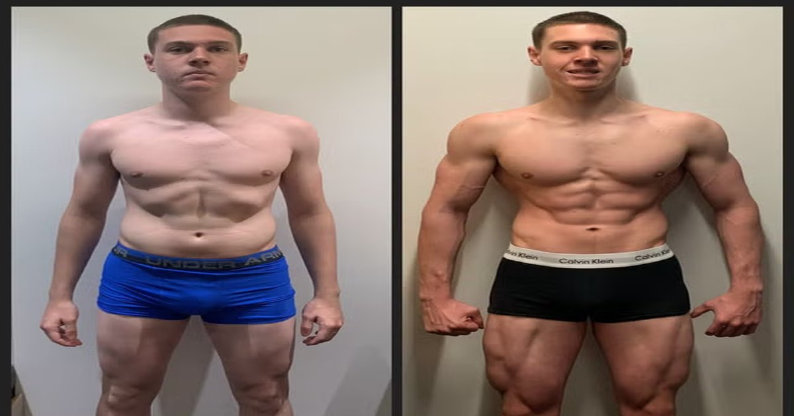

You feel tired all the time. You're hungry an hour after eating. Your hair is thinning. Your nails are brittle. Your workouts are going nowhere. You think it's stress. You think it's age. You think it's just how your body is. The Protein Intake Calculator can tell you if you're getting enough.Protein Intake Calculator
Enter your weight, activity level, and goal — get your daily protein target in grams per pound and grams per kilogram.
All data stays in your browser — we never see it.
Macro Split Planner
Enter your calorie target and protein percentage — get a daily macro split with meal-by-meal recommendations.
All data stays in your browser — we never see it.
Meal Protein Tracker
Log your daily meals and see protein per meal — get instant feedback on your distribution.
All data stays in your browser — we never see it.
Protein Source Comparator
Compare cost per gram, leucine content, PDCAAS score, and digestibility across protein sources.
All data stays in your browser — we never see it.